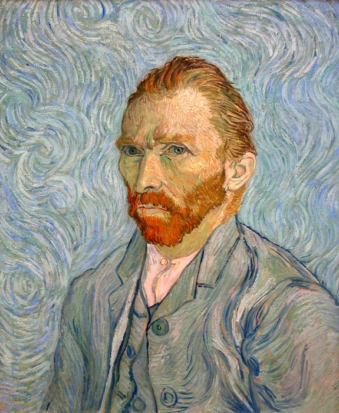

Вінсент Віллем ван Гог

Вінсент Віллем ван Гог народився в селі Гроот-Зюндерт у провінції Брабант на півдні Нідерландів. Його батьками були Анна Корнелія Карбентус еодор ван Гог, пастор Нідерландської реформаторської церкви. Йому дали ім'я на честь дідуся Вінсента ван Гога
Звездное небо